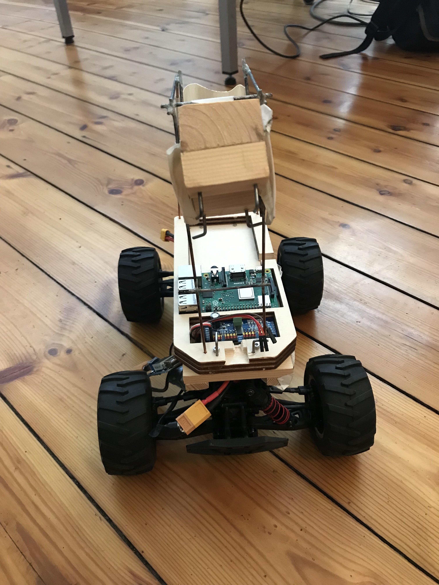

Llamafiles plus RAG to have a chat with NixOS documentation running locally
Jose Quesada, Phd., Director at Data Science Retreat
People don’t read (longform) anymore.
Including documentation
Photo by Andrea De Santis on Unsplash
Example ngix prompt
*Context:* You are setting up a NixOS system and need to configure it
to run as a web server with the following requirements:
The server should run Nginx.
It should have a user called admin with sudo privileges.
The server should be accessible via SSH with the public key authentication
for the admin user.
*Task:* Write a NixOS configuration that defines these requirements.
Assume you are working in a fresh NixOS installation with no existing
configuration.
The configuration should:
Install and configure Nginx to start at boot.
Create an admin user with sudo privileges.
Configure SSH to allow public key authentication for the admin user.
Canonical Answer Requirements: The solution must:
Use NixOS’s configuration.nix format.
Install and enable Nginx.
Define a user admin with sudo access.
Configure SSH with public key authentication.
*Hint:* Refer to NixOS modules for services.nginx and services.openssh.Nixdoc
{ config, pkgs, ... }:
let
nginxConfig = pkgs.nginx.config;
opensshConfig = pkgs.openssh.config;
in
{ services.nginx = {
enable = true;
config = nginxConfig;
};
users.admin = {
name = "admin";
isManaged = true;
password = "password";
sudo = {
allow = [ "ALL" ];
};
};
system.ssh.authorizedKeys = {
enable = true;
keys = [
opensshConfig.serverKeys.key1.publicKey
];
};
system.ssh.authorizedKeys.key1 = {
name = "key1";
publicKey = "YOUR_PUBLIC_KEY_HERE";
};
}Graph by Gloria Mark
Code Simplicity leads to security and productivity
A good portion of the existing security industry is like
helping a crack addict chose a better toothpaste
Graph by Sourcegraph
Story time
Using million-line libraries for simple functions
When a data scientist needs a cosine function:
- import sckitlearn (about 130k SLOC)
- depends of numpy (about 130k SLOC)
- depends on BLAS (about 12k SLOC of fortran)
…and much more
Using million-line libraries for simple functions
Simplicity heros
Story time: Nvidia in AI
Image by Preserve Knowledge
ImageNet Large Scale Visual Recognition Challenge (ILSVRC)
Image by ChatGTP
Nvidia valuation
Image by ChatGTP
ChatGTP compute power
Petaflop: 10^5 (or one quadrillion) floating-point operations per second.
Image by ChatGTP
How does a Petaflop look like IRL?
- 8x Nvidia 4090 cards
- 192 GB
- 40k USD
Image by tinycorp
Nvidia Cuda
Image by DGCmechanics
Nvidia Cuda
Image by iali07
Realization: an individual cannot play

Image by Jose Quesada
Realization: an individual cannot play

- Toy self driving car that picks up cigarette butts, circa 2018
- One rpi
- Toy car OS made in-house, before AMZ commercialized them
Image by Jose Quesada
{kind=link}
Model weights
Image by Chris Samiullah
How to run on GPU, for individuals
Georgi Gerganov, llamacpp
- Author of LLama.cpp
- Can run LLMs on CPU
- Or on GPUs, without giant libraries like CUDA or ROCm
GPT3

Star History llama

George Hotz, tinygrad and tinybox
- Author of tinygrad (much simpler than pytorch)
- Can run LLMs on non-Nvidia gpus (AMD)
- Sells petaflop computers at prices an individual could potentially afford
Fabrice Bellard
- Author of tcc (a C compiler in 2000 lines of code vs LLVC 20 million lines)
- FFMPEG, QEMU, QuickJS …
- His code runs on every cell tower for mobile communication
Justine Tunnuy
- Author of llamafiles, one single executable file runs an LLM
- Cosmopolitan, redbean server, pledge …
- Her code runs on bare metal, not only on every OS
Retrieval augmented generation (RAG)
A method to get a general model to specialize on a topic
Getting a model to add knowledge without the need to recompute weights
Image by towardsai
Data sources:
150mb total
LLMs
- Mistral-7B-Instruct-v0.2 (4 Gb llamafile)
Indexing
def embed(text: str) -> np.ndarray:
embedding = llamafile.embed(text)
# why L2-normalize here?
# see: https://github.com/facebookresearch/faiss/wiki/MetricType-and-distances#how-can-i-index-vectors-for-cosine-similarity
faiss.normalize_L2(embedding)
return embedding
def build_index():
savedir = Path(settings.INDEX_SAVE_DIR)
if savedir.exists():
logger.info("index already exists @ %s, will not overwrite", savedir)
return
embedding_dim = llamafile.embed("Apples are red.").shape[-1]
# index uses cosine similarity
# see: https://github.com/facebookresearch/faiss/wiki/MetricType-and-distances#how-can-i-index-vectors-for-cosine-similarity
index = faiss.IndexFlatIP(embedding_dim)
docs = []
for text in load_data_for_indexing():
embedding = embed(text)
index.add(embedding)
docs.append(text)Benchmarks
Benchmark 1: simple C program
**Context:** Create a Nix
expression to package a simple C program that consists of a single file,
`hello.c`, which prints "Hello, World!" to the terminal. Assume you are working
in a pure Nix environment where no system packages are available except for the
ones you declare in your Nix expression. You are required to define all
dependencies, including the C compiler, explicitly.
**Task:** Write a Nix expression that fetches the `hello.c` file from a remote
GitHub repository, compiles it using the GCC compiler, and packages the
resulting binary. Ensure that the final derivation produces an executable
called `hello`.
**Canonical Answer Requirements:** The solution must:
1. Fetch `hello.c` from a URL using the `fetchurl` function or a similar
mechanism.
2. Use `gcc` from the Nixpkgs repository to compile the C code.
3. Ensure that the output of the derivation is an executable called `hello`.
4. Be minimal, using only the necessary dependencies.
**Hint:** You may need to create a derivation that compiles and links the C
code. Look into using `stdenv.mkDerivation`. Benchmark 1: simple C program Nixdoc
Based on the context information provided, here's a minimal Nix expression to
package a simple C program called `hello.c` that prints "Hello, World!" to the
terminal:{ stdenv, fetchurl, gcc }:
let
url = "https://github.com/username/repository/raw/master/hello.c";
name = "hello";
in
stdenv.mkDerivation rec {
name = name;
src = fetchurl url;
builder = "gcc ${src}/${name}.c -o ${name}";
outputs = {
hello = "${name}/${name}";
};
}Replace `username` and `repository` with the actual GitHub username and repository
name where the `hello.c` file is located. This expression fetches the `hello.c`
file from the specified URL using the `fetchurl` function, compiles it using
the `gcc` compiler, and packages the resulting binary as an executable called
`hello`. The `stdenv` environment is used to ensure that the derivation runs
in a standard Nix environment.</s>"Benchmark 1: simple C program chatGPT
{ pkgs ? import <nixpkgs> {} }:
pkgs.stdenv.mkDerivation {
pname = "hello";
version = "1.0";
# Fetch the hello.c file from a remote URL
src = pkgs.fetchurl {
url = "https://github.com/user/repo/raw/main/hello.c";
sha256 = "<replace-with-correct-sha256>";
};
# Specify dependencies (gcc for compilation)
buildInputs = [ pkgs.gcc ];
# Build process
buildPhase = ''
gcc -o hello ${src}
'';
# Install the resulting executable
installPhase = ''
mkdir -p $out/bin
cp hello $out/bin/
'';
meta = with pkgs.lib; {
description = "A simple program that prints 'Hello, World!'";
license = licenses.mit;
maintainers = [ maintainers.yourname ];
};
}Benchmark 2: Override a package from Nixpkgs to use a specific version
**Context:** You are managing a project using Nix and you need to
override the version of `wget` to a specific version (`1.21.1`), as the latest
version introduces a bug that affects your use case. The package should still
be fetched from Nixpkgs, but you need to make sure that all the dependencies
and build instructions follow the normal `wget` derivation from the repository,
except for the version.
**Task:** Write a Nix expression that imports Nixpkgs, overrides the version
of `wget` to `1.21.1`, and installs it. Ensure that your derivation properly
fetches and builds the specified version of `wget` from the source code, while
maintaining compatibility with Nixpkgs.
**Canonical Answer Requirements:** The solution must:
1. Import Nixpkgs and override the version of `wget` within it.
2. Use the `overrideAttrs` or similar mechanism to adjust the derivation's
attributes while keeping other dependencies intact.
3. Ensure the correct source code for `wget` version 1.21.1 is fetched and
built.
**Hint:** You can find `wget`’s attributes in Nixpkgs, and you may need to
modify the `src` attribute and hash for fetching the correct source. ```Benchmark 2: Override a package from Nixpkgs to use a specific version nixdoc
let
pkgs = import <nixpkgs> { } ;
wget = pkgs.fetchFromGitHub {
name = "wget" ;
version = "1.21.1" ;
owner = "gnuwget" ;
repo = "wget" ;
url = "https://github.com/gnuwget/wget.git" ;
hash = "sha256-<your_hash_here>" ;
} ;
in
{
name = "my-wget" ;
description = "My custom version of wget" ;
inputs = {
input = wget ;
inherit pkgs ;
} ;
outputs = {
auto = self : input {
version = version ;
} ;
} ;
}Replace `<your_hash_here>` with the hash of the `wget` version 1.21.1 commit you want to use. This expression imports Nixpkgs, overrides the `wget` derivation with a new one that fetches the specified version from the source code, and installs it while keeping other dependencies intact. The `inputs` attribute ensures that the new derivation depends on the original `wget` derivation from Nixpkgs. The `outputs` attribute renames the output derivation to `auto` and sets its `version` attribute to the overridden version.</s>"Benchmark 2: Override a package from Nixpkgs to use a specific version gpt
{ pkgs ? import <nixpkgs> {} }:
let
wget_1_21_1 = pkgs.wget.overrideAttrs (oldAttrs: {
version = "1.21.1";
src = pkgs.fetchurl {
url = "https://ftp.gnu.org/gnu/wget/wget-${version}.tar.gz";
sha256 = "0i08yx2ip6fr3jz3xbfsfp3yrsmys4i6f5vh0q44wgwl9lni46a3";
# Replace with actual hash if needed
};
});
in
wget_1_21_1Explanation
Importing Nixpkgs: The { pkgs ? import <nixpkgs> {} } imports Nixpkgs, which gives us access to the default packages.
Override wget with overrideAttrs:
version = "1.21.1"; specifies the new version for wget.
src = pkgs.fetchurl { ... }; points to the specific tarball URL for wget version 1.21.1 from GNU’s official repository.
sha256 needs to match the hash of the downloaded file for verification. Replace the hash if it differs for the specified version.
Usage
Save the expression in a file (e.g., wget-1.21.1.nix) and install it by running:
bash
nix-build wget-1.21.1.nix
Or, if you want to use it in an environment:
bash
nix-shell wget-1.21.1.nix
This expression ensures that Nixpkgs uses the specified version of wget, keeping the build process and dependencies aligned with the default derivation.Benchmark 3: Create a reproducible development env, numpy pandas matplotlib
**Context:** You are working on a Python project that requires
Python 3.8 and the following libraries: `numpy`, `pandas`, and `matplotlib`.
You want to use Nix to create a reproducible development environment where the
exact versions of these libraries are pinned, ensuring that all contributors to
the project have the same environment.
**Task:** Write a Nix expression to create a `shell.nix` file that provides a
development environment with Python 3.8 and the specified libraries. Make sure
the environment can be entered using `nix-shell` and allows running Python
with the correct versions of the libraries available.
**Canonical Answer Requirements:** The solution must:
1. Use a specific Python 3.8 interpreter from Nixpkgs.
2. Include `numpy`, `pandas`, and `matplotlib` in the environment.
3. Ensure that the versions of the libraries are locked to specific versions
(e.g., `numpy` 1.20.3, `pandas` 1.2.4, `matplotlib` 3.4.2).
4. Allow users to enter the development environment using `nix-shell`.
**Hint:** Look into using `buildInputs` and `python38.withPackages` for
managing Python dependencies. Benchmark 3: Create a reproducible development env, numpy pandas matplotlib Nixdoc
{ config, pkgs, ... }:
let
python38 = pkgs.python38.withPackages ([
pkgs.numpy.version "1.20.3",
pkgs.pandas.version "1.2.4",
pkgs.matplotlib.version "3.4.2"
]);
in
{
name = "my-python-project";
version = "0.1.0";
description = "A description of your project";
environment.systemPackages = [
pkgs.python38
];
shellHook = ''
export PATH="/r${1}/${python38}/bin:${PATH}";
'' ;
buildInputs = [ python38 ];
inputs = [ python38 ];
outputs = {
shell = {
name = "my-python-project-shell";
description = "A shell environment for my-python-project";
shellScript = ''
#!/nix-env
export NIX_PROFILE_DIR="/nix/var/nixprofile";
export PATH="/${python38}/bin:${PATH}";
# Add any project-specific environment variables here
exec "${python38}/bin/python3.8" "$@"
''
}
};
}Replace `"A description of your project"` with a description of your project. This `shell.nix` file creates a development environment with Python 3.8 and the specified libraries (`numpy`, `pandas`, and `matplotlib`). The versions of the libraries are locked to `1.20.3`, `1.2.4`, and `3.4.2`, respectively. Users can enter the development environment using `nix-shell`:Benchmark 3: Create a reproducible development env, numpy pandas matplotlib GPT
{ pkgs ? import <nixpkgs> { } }:
pkgs.mkShell {
# Specify the Python interpreter version.
buildInputs = [
(pkgs.python38.withPackages (ps: with ps; [
numpy
pandas
matplotlib
]))
];
# Pin specific versions of the libraries.
PYTHONPATH = pkgs.lib.makeSearchPathOutput "site-packages" "PYTHONPATH" [
(pkgs.python38Packages.numpy.override { version = "1.20.3"; })
(pkgs.python38Packages.pandas.override { version = "1.2.4"; })
(pkgs.python38Packages.matplotlib.override { version = "3.4.2"; })
];
}Explanation
Python Interpreter: The expression sets up Python 3.8 by using pkgs.python38.
Libraries: The python38.withPackages function allows specifying Python packages (numpy, pandas, and matplotlib), each pinned to specific versions.
Environment Variable: PYTHONPATH is set up to ensure that the specified package versions are recognized by Python.
To use this environment:
Save this code as shell.nix in the root directory of your project.
Run nix-shell in the same directory to enter the development environment with Python 3.8 and the pinned library versions.
This ensures that every contributor has the same Python environment with the exact versions specified.benchmark 4 ngix prompt
*Context:* You are setting up a NixOS system and need to configure it
to run as a web server with the following requirements:
The server should run Nginx.
It should have a user called admin with sudo privileges.
The server should be accessible via SSH with the public key authentication
for the admin user.
*Task:* Write a NixOS configuration that defines these requirements.
Assume you are working in a fresh NixOS installation with no existing configuration.
The configuration should:
Install and configure Nginx to start at boot.
Create an admin user with sudo privileges.
Configure SSH to allow public key authentication for the admin user.
Canonical Answer Requirements: The solution must:
Use NixOS’s configuration.nix format.
Install and enable Nginx.
Define a user admin with sudo access.
Configure SSH with public key authentication.
*Hint:* Refer to NixOS modules for services.nginx and services.openssh.benchmark 4 ngix chat-nixdoc
{ config, pkgs, ... }:
let
nginxConfig = pkgs.nginx.config;
opensshConfig = pkgs.openssh.config;
in
{ services.nginx = {
enable = true;
config = nginxConfig;
};
users.admin = {
name = "admin";
isManaged = true;
password = "password";
sudo = {
allow = [ "ALL" ];
};
};
system.ssh.authorizedKeys = {
enable = true;
keys = [
opensshConfig.serverKeys.key1.publicKey
];
};
system.ssh.authorizedKeys.key1 = {
name = "key1";
publicKey = "YOUR_PUBLIC_KEY_HERE";
};
}benchmark 4 ngix chat-GPT 4o
{ config, pkgs, ... }:
{
# Basic system configuration
imports = [ ];
# Enable Nginx and configure it to start on boot
services.nginx = {
enable = true;
# Optionally configure the default server or other options here
};
# Create the admin user with sudo privileges
users.users.admin = {
isNormalUser = true;
description = "Admin User";
extraGroups = [ "wheel" ]; # Allows sudo access for the admin user
openssh.authorizedKeys.keys = [
"ssh-rsa AAAAB3...your-public-key-here... user@host"
];
};
# Enable SSH and configure it for public key authentication
services.openssh = {
enable = true;
permitRootLogin = "no"; # Disable root login for security
passwordAuthentication = false; # Disable password authentication
};
# Allow members of the wheel group to use sudo
security.sudo = {
enable = true;
wheelNeedsPassword = false; # Admin users in the wheel group won't need a password for sudo
};
# Networking configuration
networking.firewall.allowedTCPPorts = [ 22 80 ]; # Open ports for SSH and HTTP
networking.hostName = "web-server"; # Set a hostname for the server
# Define other system-wide settings if necessary
}Benchmark 5: Nix function for reusable packages
**Context:** You
need to create multiple packages with slight variations in their dependencies.
For example, imagine packaging versions of the `hello` program, but one variant
depends on `libA` and the other on `libB`. To avoid code duplication, you want
to create a Nix function that generalizes the build and dependency declaration,
allowing you to define `helloWithLibA` and `helloWithLibB` packages by calling
your custom function.
**Task:** Write a Nix expression that defines a function `helloWithLib` which
takes a library package as an argument and produces a `hello` package with
that library as a dependency. Then, use this function to define two packages:
`helloWithLibA` and `helloWithLibB`, where `LibA` and `LibB` are fictional
dependencies.
**Canonical Answer Requirements:** The solution must:
1. Define a Nix function that accepts a dependency (e.g., `lib`) and packages
`hello` with it.
2. Demonstrate the use of the function by creating two derivations:
`helloWithLibA` and `helloWithLibB`.
3. Use fictional libraries like `libA` and `libB` to demonstrate
functionality.
**Hint:** Explore Nix functions and parameterization to achieve a reusable
package definition. Benchmark 5: Nix function for reusable packages nixdoc
{ pkgs ? import <nixpkgs> {} : pkgs }:
def helloWithLib = args: {
name = "helloWithLib-${args.libName}";
pkgs = args.pkgs;
inputs = {
inherit pkgs.hello;
lib = pkgs.libs.${args.libName};
};
outputs = {
"." = {
inherit = [ inputs.hello inputs.lib ];
buildInputs = [ inputs.lib ];
meta = {
description = "Hello world program with ${args.libName} library";
};
};
};
};This function accepts an argument `args` which contains a `libName` property. It sets the name of the derived package based on the library name and imports the required packages. The `inputs` and `outputs` sections define the dependencies and the resulting package, respectively. The `buildInputs` property is set to the library package.
Now, you can use this function to create two packages: `helloWithLibA` and `helloWithLibB`:
``````nix
{ pkgs ? import <nixpkgs> {} : pkgs }:
def helloWithLib = args: {
name = "helloWithLib-${args.libName}";
pkgs = args.pkgs;
inputs = {
inherit pkgs.hello;
lib = pkgs.libs.${args.libName};
};
outputs = {
"." = {
inherit = [ inputs.hello inputs.lib ];
buildInputs = [ inputs.lib ];
meta = {
description = "Hello world program with ${args.libName} library";
};
};
};
};
pkgs = {
pkgs = {
hello = pkgs.hello;
libs = {
libA = {
name = "libA";
version = "1.0.0";
};
libB = {
name = "libB";
version = "2.0.0";
};
};
};
};
helloWithLib { lib = libs.libA }
helloWithLib { lib = libs.libB }Benchmark 5: Nix function for reusable packages GPT
# Define the helloWithLib function
{ pkgs ? import <nixpkgs> {} }:
let
# This function takes a library package and returns a hello package with it as a dependency.
```nix
helloWithLib = lib: pkgs.stdenv.mkDerivation {
name = "hello-with-${lib.pname}";
src = pkgs.hello.src;
buildInputs = [ lib pkgs.hello ];
# Optional: You can define additional environment settings if necessary
# or customize the build phases here.
meta = with pkgs.lib; {
description = "Hello program with ${lib.pname} dependency";
license = pkgs.hello.meta.license;
};
};
# Define fictional libraries libA and libB
libA = pkgs.buildPackages.libA; # Replace with an actual library if available
libB = pkgs.buildPackages.libB; # Replace with an actual library if available
# Use helloWithLib function to create specific packages
helloWithLibA = helloWithLib libA;
helloWithLibB = helloWithLib libB;
in
{
inherit helloWithLibA helloWithLibB;
}Explanation:
Function Definition (helloWithLib):
helloWithLib is a function that takes a library (lib) as an argument and returns a derivation (hello package) that depends on both the specified library and hello.
We set src to pkgs.hello.src to reuse the source of the hello program.
The buildInputs attribute includes both hello and the given lib, meaning it will depend on both.
Libraries (libA and libB):
These are placeholders for actual libraries. In a real setup, libA and libB should be replaced by actual library packages from pkgs.
Package Definitions (helloWithLibA and helloWithLibB):
We call helloWithLib with libA and libB, respectively, to create two separate hello packages, each with a different dependency.
Usage
To test or build these packages, you would reference helloWithLibA or helloWithLibB in your Nix expressions or Nix shell, depending on your environment:
bash
nix-build -E 'import ./your-file.nix { }' -A helloWithLibA
nix-build -E 'import ./your-file.nix { }' -A helloWithLibBBenchmark 6: Pin Nixpkgs for a stable development environment
**Context:** You’re working on a project where you want to ensure the exact
versions of dependencies remain consistent across all builds. This means
pinning Nixpkgs to a specific commit. You’re tasked with defining a `shell.nix`
file that imports a pinned version of Nixpkgs to maintain a stable,
reproducible environment for future builds.
**Task:** Write a `shell.nix` expression that:
1. Fetches a specific Nixpkgs commit (e.g., `c3f6bf2b2e9`) from GitHub.
2. Sets up an environment with Python 3.9 and `requests` library pinned to the
versions available in this Nixpkgs commit.
**Canonical Answer Requirements:** The solution must:
1. Use `fetchTarball` or `fetchFromGitHub` to pin Nixpkgs to the specified
commit.
2. Set up a Python environment with Python 3.9 and `requests` from the pinned
Nixpkgs.
3. Be fully reproducible, allowing anyone to replicate the environment by
using `nix-shell`.
**Hint:** You can use `import` with a custom path to load a specific Nixpkgs
version. Benchmark 6: Pin Nixpkgs for a stable development environment nixdoc
#!nix-env
# Import Nixpkgs at the specified commit
let
pkgs = import <nixpkgs> {
fetchFromGitHub = {
owner = "nixos"
repo = "nixpkgs"
rev = "c3f6bf2b2e9"
hash = ""
}
}
in pkgs ;
# Set up a Python environment with Python 3.9 and requests
let
python39 = pkgs.python39
requests = python39.buildPackages.requests
in
# Create a new environment
let
myEnv = import <nixpkgs> {
name = "myEnv"
environment.PYTHONPATH = [ python39.lib ]
}
in
# Build the environment with Python 3.9 and requests
stdenv.mkDerivation rec {
name = "myEnv"
buildInputs = [ python39 requests ]
environment.PYTHONPATH = [ python39.lib ]
shellHook = ''
export PATH="${python39}/bin:${myEnv}/bin:${PATH}"
''
}This `shell.nix` file imports Nixpkgs at the specified commit using `fetchFromGitHub`, sets up a Python environment with Python 3.9 and the `requests` library, and creates a new environment called `myEnv`. The environment is built using `stdenv.mkDerivation` and includes a `shellHook` to set the `PATH` environment variable for the Python executables. This file is fully reproducible and can be used with `nix-shell` to create an environment with the specified dependencies.</s>"Benchmark 6: Pin Nixpkgs for a stable development environment GPT
# shell.nix
{ pkgs ? import (builtins.fetchTarball {
url = "https://github.com/NixOS/nixpkgs/archive/c3f6bf2b2e9.tar.gz";
sha256 = "0w2g2ghwhm71ybzhd9zqhn4dkvn5jfq5ylbsx5nyk1dm14gw4g2i";
}) {} }:
pkgs.mkShell {
buildInputs = with pkgs; [
(python39.withPackages (ps: with ps; [ requests ]))
];
}Explanation:
Pinning Nixpkgs: The fetchTarball function fetches the Nixpkgs repository from GitHub at the specific commit c3f6bf2b2e9. The sha256 value ensures the integrity of the download, verifying the archive's contents.
Importing Nixpkgs: The fetched tarball is imported as pkgs, allowing us to access packages from this specific snapshot of Nixpkgs.
Setting Up Python 3.9 and Requests: python39.withPackages creates a Python 3.9 environment with the requests library. This requests version is taken from the pinned Nixpkgs commit, ensuring reproducibility.
Reproducible Shell: By running nix-shell, any user can replicate the exact environment, with Python 3.9 and the requests version from the specified commit.Benchmark 7: Implement a NixOS module for a simple HTTP service
**Context:** You need to deploy a small HTTP server written in Python to NixOS.
The server code is a single file (`server.py`) that listens on port 8080 and
serves "Hello, Nix!". You are asked to package this service, create a NixOS
module to manage it, and configure the module to automatically start on boot.
**Task:** Write a NixOS module that:
1. Packages `server.py` in a custom Nix derivation.
2. Defines a NixOS module that creates a systemd service to manage the HTTP
server.
3. Configures the service to start at boot and listens on port 8080.
**Canonical Answer Requirements:** The solution must:
1. Define a derivation to package the `server.py` script.
2. Set up a systemd service in the NixOS module to manage the HTTP server.
3. Ensure the service listens on port 8080 and starts automatically on boot.
**Hint:** Review `systemd.services` configuration in NixOS modules to see how
to define custom services. Benchmark 7: Implement a NixOS module for a simple HTTP service nixdoc
To create a NixOS module for your Python HTTP server, follow these steps:
1. Create a new file named `server.nix` in a new directory, for example, `/nixpkgs/modules/my-http-server`.
2. Define a derivation to package the `server.py` script:{ pkgs ? import <nixpkgs> {} , ... }:
let
myPython = pkgs.python37;
myServer = pkgs.newDerivationRec {
name = "my-http-server";
src = ./.;
buildInputs = [ myPython ];
installPhase = ''
mkdir -p ${out}/bin
python3 ${myPython}/bin/python3 ${src}/server.py --install-handler 0.0.0.0 8080
cp ${src}/server.py ${out}/bin/
'';
};
export myPython myServer;{ pkgs ? import <nixpkgs> {}, services ? import <nixpkgs/modules/services> {} }:
{
name = "my-http-server";
description = "A simple HTTP server for NixOS";
version = "0.1.0";
inputs = {
myPython = {
type = "package";
name = "python37";
};
};
services.http = {
enable = true;
listenAddress = "0.0.0.0";
listenPort = 8080;
serviceConfig = {
systemd.service = {
description = "My HTTP server";
execStart = "/nix/bin/python3 ${myPython}/bin/server.py";
restart = "on-failure";
user = "root";
group = "root";
};
};
};
}Benchmark 7: Implement a NixOS module for a simple HTTP service GPT
Here is a NixOS module to package and manage the `server.py` HTTP server as a systemd service. This configuration ensures that the server runs at boot and listens on port 8080.
### 1. Directory Structure
Assume `server.py` and the NixOS module file will be in the following structure:.
├── server.py
└── my-http-server.nix### 2. Content of `server.py`
Your `server.py` file should contain the HTTP server code. Here’s a simple example:# server.py
from http.server import SimpleHTTPRequestHandler, HTTPServer
class HelloHandler(SimpleHTTPRequestHandler):
def do_GET(self):
self.send_response(200)
self.send_header("Content-type", "text/plain")
self.end_headers()
self.wfile.write(b"Hello, Nix!")
if __name__ == "__main__":
server = HTTPServer(("0.0.0.0", 8080), HelloHandler)
print("Serving on port 8080")
server.serve_forever()3. Content of my-http-server.nix
{ config, pkgs, ... }:
let
# Define a package for the HTTP server.
httpServerPackage = pkgs.stdenv.mkDerivation {
pname = "http-server";
version = "1.0";
src = ./server.py;
buildPhase = ''
mkdir -p $out/bin
cp $src $out/bin/server.py
'';
installPhase = ''
chmod +x $out/bin/server.py
'';
};
in
{
options.services.myHttpServer = {
enable = mkOption {
type = types.bool;
default = false;
description = "Enable the custom HTTP server service.";
};
};
config = mkIf config.services.myHttpServer.enable {
# Register the HTTP server as a systemd service.
systemd.services.myHttpServer = {
description = "My HTTP Server";
# Ensure the service starts at boot and restarts on failure.
wantedBy = [ "multi-user.target" ];
after = [ "network.target" ];
restartIfChanged = true;
restartIfNeeded = true;
serviceConfig = {
ExecStart = "${httpServerPackage}/bin/server.py";
ExecStop = "/bin/kill $MAINPID";
Restart = "on-failure";
User = "nobody"; # Use an unprivileged user
};
# Set up firewall to allow traffic on port 8080.
environment.etc."myHttpServer.service" = {
contents = ''
[Service]
Environment=PORT=8080
'';
};
};
# Open port 8080 in the firewall.
networking.firewall.allowedTCPPorts = [ 8080 ];
};
}### Explanation of Each Section
1. **Nix Derivation for Packaging `server.py`**:
- `httpServerPackage`: This derivation packages `server.py` as an executable in `bin/server.py`.
2. **Systemd Service Definition**:
- `systemd.services.myHttpServer`: Configures the service to:
- Run `server.py` at startup.
- Start automatically on boot (via `wantedBy = ["multi-user.target"]`).
- Restart on failure.
- `ExecStart` points to the packaged script.
- The service runs as an unprivileged user (`nobody`) for security.
3. **Firewall Configuration**:
- `networking.firewall.allowedTCPPorts = [ 8080 ]`: Opens port 8080 for external access.
### 4. Enabling the Module
To enable this module on your NixOS system:
1. Add the module to your NixOS configuration, for instance in `/etc/nixos/configuration.nix`:Benchmark 8: Create a Nix derivation that packages a Haskell project
**Context:** You have a Haskell project with a `default.nix`
generated by `cabal2nix`, but it needs to be modified to build correctly in
Nix. The project relies on the Haskell package `text`, and it should build
successfully without any manual intervention in a Nix environment. You need to
write a `default.nix` file that pulls in the necessary dependencies and builds
the Haskell package.
**Task:** Create a `default.nix` file that:
1. Uses `cabal2nix` output as a starting point for the package definition.
2. Specifies `text` as a dependency.
3. Ensures the package builds without errors.
**Canonical Answer Requirements:** The solution must:
1. Use `haskellPackages.callCabal2nix` or `haskellPackages.mkDerivation` to
define the package.
2. Include `text` as a dependency and ensure the derivation compiles
successfully.
3. Work without additional manual setup outside of Nix.
**Hint:** Look into Nixpkgs' Haskell infrastructure to manage dependencies and
builds. Benchmark 8: Create a Nix derivation that packages a Haskell project nixdoc
{ pkgs ? import <nixpkgs> {} }
{
name = " my-haskell-project ";
description = " A description of your Haskell project ";
version = " 0.1.0 ";
homepage = " https://github.com/username/my-haskell-project ";
license = " BSD-3-Clause ";
inputs.cabal-file = " path/to/Cabalfile ";
outputs = {
install = {
to = "./result" ;
in = "./.cabal-install/lib/site-local/";
} ;
} ;
buildInputs = [ pkgs.text ];
stdenv.mkDerivation rec {
name = " my-haskell-project ";
src = pkgs.cabal2nix.buildInputs [ inputs.cabal-file ] ;
buildInputs = self.buildInputs ;
hsPackages = pkgs.haskellPackages ;
} ;
}Replace `path/to/Cabalfile` with the actual path to your project's `Cabalfile`. This `default.nix` file uses `haskellPackages.mkDerivation` to define the package and includes `text` as a dependency. It also ensures the derivation compiles successfully by using `cabal2nix` to build the project. This solution should work without any additional manual setup outside of Nix.</s>"Benchmark 8: Create a Nix derivation that packages a Haskell project GPT
To create a `default.nix` file that sets up your Haskell project with the `text` package dependency using `cabal2nix`, you can use `haskellPackages.callCabal2nix` from the Nixpkgs Haskell infrastructure. This setup will pull in the necessary dependencies and ensure the package builds correctly. Here’s a `default.nix` template that meets your requirements:{ pkgs ? import <nixpkgs> {} }:
let
inherit (pkgs) haskellPackages;
# Replace "my-package-name" and "path/to/your/project" with your project's name and path
myPackage = haskellPackages.callCabal2nix "my-package-name" ./path/to/your/project {
# Specify dependencies, overriding or adding where needed
buildInputs = [ haskellPackages.text ];
};
in
pkgs.haskellPackages.mkDerivation {
pname = "my-package-name";
version = "0.1.0.0";
src = myPackage.src;
buildDepends = [ haskellPackages.text ];
meta = with pkgs.lib; {
description = "A Haskell project with text dependency";
license = licenses.mit;
maintainers = with maintainers; [ yourName ];
};
}### Explanation
1. **Imports**: `pkgs ? import <nixpkgs> {}` imports Nixpkgs, allowing you to access its Haskell infrastructure.
2. **Dependencies**: `buildInputs = [ haskellPackages.text ];` includes `text` as a dependency. You can specify additional dependencies if needed.
3. **mkDerivation Block**: This block uses `haskellPackages.mkDerivation` to define the package, specifying `pname`, `version`, and `meta` information. It also adds `text` to `buildDepends` to ensure it is included in the build environment.
This `default.nix` file should let you build the Haskell project with Nix without needing extra setup. Just run:Benchmark 9: Generate a Docker image with Nix
**Context:** You
need to create a Docker image for a Go application using Nix. The application
is a single Go file that builds into a static binary called `app`. You must
write a Nix expression that compiles this Go application and produces a minimal
Docker image containing only the compiled binary.
**Task:** Write a Nix expression that:
1. Fetches the Go source code from a URL.
2. Compiles the Go application into a static binary.
3. Produces a minimal Docker image containing only the binary.
**Canonical Answer Requirements:** The solution must:
1. Use `dockerTools.buildImage` or `dockerTools.buildLayeredImage` to produce
the Docker image.
2. Ensure the resulting Docker image contains only the static binary.
3. Be reproducible and self-contained.
**Hint:** Look into `dockerTools` for building Docker images directly from Nix
expressions. Benchmark 9: Generate a Docker image with Nix nixdoc
Based on the context information provided, the easiest way to run a sequence of commands for building something using Nix is by writing a Nix expression that uses the `dockerTools.buildLayeredImage` utility to create a Docker image for your Go application. Here's an example of how you can write a Nix expression to compile a Go application and produce a minimal Docker image containing only the compiled binary:{ pkgs ? import <nixpkgs> {}
dockerTools ? import <nixpkgs> {
buildLayeredImage = "dockerTools.buildLayeredImage"
} {}
go ? import <nixpkgs> {
goPackages = "goPackages"
} {}
# Define the inputs for your Go application
inputs = {
goSource = "https://github.com/yourusername/yourrepo/src/yourgofile.go";
};
# Define the build environment for your Go application
buildInputs = [
inputs.goSource
goPackages
];
# Define the build phase for your Go application
buildPhase = ''
# Fetch the Go source code
fetchFromGitHub ${inputs.goSource};
# Set up the Go environment
env.go = {
inherit goPackages;
path = appendPaths (path) (goPackages.go.bin);
};
# Compile the Go application into a static binary
goBuild = command "go" "build" "-o" "app" ".";
};
# Define the Docker image for your Go application
yourGoApp = {
name = "yourgoapp";
buildInputs = [
buildInputs
];
buildPhase = ''
# Use dockerTools.buildLayeredImage to create a Docker image
${dockerTools.buildLayeredImage} {
baseImage = "alpine:latest";
build = buildPhase;
run = ''
# Run the compiled binary when the container starts
command = ["/app"];
};
'';
};
# Build the Docker image for your Go application
pkgs.mkDerivation rec {
name = "yourgoapp-docker";
src = ''
import <nixpkgs> {};
import . {};
${yourGoApp}
'';
};
}Replace `yourusername`, `yourrepo`, `yourgofile.go`, and `yourgoapp` with the appropriate values for your Go application. This Nix expression fetches the Go source code from a URL, compiles it into a static binary, and produces a minimal Docker image containing only the binary using `dockerTools.buildLayeredImage`. The resulting Docker image is reproducible and self-contained.</s>"Benchmark 9: Generate a Docker image with Nix GPT
Here’s a Nix expression to create a minimal Docker image for your Go application using `dockerTools.buildImage`. This expression fetches the Go source, builds it as a static binary, and produces a Docker image containing only that binary.{ pkgs ? import <nixpkgs> {} }:
let
goApp = pkgs.fetchurl {
url = "https://example.com/path/to/your/app.go";
sha256 = "replace-with-correct-sha256";
};
goImage = pkgs.stdenv.mkDerivation {
name = "go-app";
src = goApp;
buildInputs = [ pkgs.go ];
buildPhase = ''
mkdir -p $out/bin
go build -ldflags='-extldflags "-static"' -o $out/bin/app ${src}
'';
installPhase = ''
cp $out/bin/app $out/
'';
};
in
pkgs.dockerTools.buildImage {
name = "go-app-image";
contents = [ goImage ];
config = {
Cmd = [ "/app" ];
};
}### Explanation
1. **Fetch Source**: The `fetchurl` function downloads the Go source code from the specified URL. Replace the `url` and `sha256` with the appropriate values for your source file.
2. **Build Binary**: The `goImage` derivation sets up a build environment with Go installed and compiles `app.go` into a static binary with `-ldflags='-extldflags "-static"'`.
3. **Docker Image Creation**: The `dockerTools.buildImage` function takes the compiled binary and builds a Docker image containing only this binary. It sets the image's `Cmd` to run the binary directly.
This expression ensures a minimal, self-contained Docker image with only the compiled Go application.Benchmark 10: Cross-compilation with Nix for a different architecture
**Context:** You have a Rust project that needs to be compiled for
the ARMv7 architecture (such as a Raspberry Pi). You want to use Nix to
cross-compile the project while developing on an x86_64 machine.
**Task:** Write a Nix expression that:
1. Fetches a Rust project from GitHub.
2. Cross-compiles the project to target ARMv7.
3. Produces a binary that can run on an ARMv7 architecture.
**Canonical Answer Requirements:** The solution must:
1. Use the appropriate Rust toolchain and configure cross-compilation in the
Nix expression.
2. Target the ARMv7 architecture explicitly.
3. Produce a binary that is runnable on an ARMv7 device.
**Hint:** Check Nixpkgs documentation on cross-compilation and Rust support
for ARM architectures. Benchmark 10: Cross-compilation with Nix for a different architecture nixdoc
To create a Nix expression for cross-compiling a Rust project for ARMv7, you can follow these steps:
1. First, ensure you have the Nix profile installed on your x86_64 machine. You can install it by running `curl -L https://nixos.org/install.sh | sh`.
2. Next, create a new Nix expression file, for example, `my_rust_project.nix`.
3. In the `my_rust_project.nix` file, define the derivation with the following structure:{ config, pkgs, ... }:
let
rust = pkgs.rust;
targetTriple = "arm-linux-gnueabihf";
projectName = "my_rust_project";
projectRepo = "https://github.com/username/my_rust_project.git";
projectHash = "sha256-hash_of_the_commit";
in
derivation {
name = "${projectName}";
src = fetchFromGitHub {
url = "${projectRepo}";
rev = "${projectHash}";
sha256 = "sha256-hash_of_the_commit_checksum";
};
builder = "sh";
args = [
"-c",
"cd ${projectName} && ${rust} build --target=${targetTriple}",
];
outputs = {
"my_rust_project" = "${projectName}/target/${targetTriple}/deploy/my_rust_project";
};
environment.system = "linux-armv7";
environment.buildInputs = [ rust ];
}Replace `username`, `my_rust_project`, `sha256-hash_of_the_commit`, and `sha256-hash_of_the_commit_checksum` with the appropriate values for your Rust project.
4. Save the file and build the derivation using the Nix expression:
This command will fetch the Rust project from GitHub, cross-compile it for ARMv7, and produce a binary that can run on an ARMv7 architecture. The binary will be located in the output directory, which is specified in the `outputs` section of the Nix expression.
For more information on cross-compiling with Nix and Rust, refer to the Nixpkgs documentation on cross-compilation and Rust support for ARM architectures.</s>"Benchmark 10: Cross-compilation with Nix for a different architecture GPT
To create a Nix expression that cross-compiles a Rust project for the ARMv7 architecture, you can use the `crossSystem` attribute in `nixpkgs` along with the appropriate Rust toolchain and configuration. Below is a Nix expression that achieves the requirements:# default.nix
{ pkgs ? import <nixpkgs> {} }:
let
rustPlatform = pkgs.rustPlatform;
# Define the cross-compilation target for ARMv7
crossSystem = {
config = "armv7-unknown-linux-gnueabihf";
};
# Fetch the Rust project from GitHub
projectSrc = pkgs.fetchFromGitHub {
owner = "your-github-username";
repo = "your-rust-project";
rev = "main"; # Specify the branch or commit hash
sha256 = "0lrvh5b6f5wz8snyqfzzxrwh37xlxwb4cl5rmf7p8i1yx98m6c5m"; # Replace with actual hash
};
in
# Use rustPlatform.buildRustPackage to build the Rust package
rustPlatform.buildRustPackage rec {
pname = "your-rust-project";
version = "0.1.0";
src = projectSrc;
nativeBuildInputs = [ pkgs.pkg-config ];
# Specify the cross-compilation target
target = crossSystem.config;
# Set the crossSystem attribute for ARMv7 architecture
crossSystem = crossSystem;
# Specify any additional cargo dependencies or custom build flags if needed
cargoBuildOptions = [ "--release" ];
meta = with pkgs.lib; {
description = "A Rust project compiled for ARMv7";
license = licenses.mit;
platforms = [ "armv7l-linux" ];
maintainers = with maintainers; [ yourGitHubUsername ];
};
}### Explanation
1. **Fetch the Project from GitHub:** The `projectSrc` attribute uses `pkgs.fetchFromGitHub` to pull the source code from a specified GitHub repository.
2. **Define the Cross-System Target:** The `crossSystem` attribute configures the target architecture. Here, we specify `armv7-unknown-linux-gnueabihf`, which is suitable for ARMv7 (Raspberry Pi 3/4).
3. **Use `buildRustPackage`:** This function in `rustPlatform` handles building Rust projects with `cargo`. It is configured with the `target` and `crossSystem` to produce an ARMv7-compatible binary.
4. **Binary Output:** When you run this Nix expression, it will build the project and output a binary located in `result/bin` that is compatible with ARMv7.
### Running the Nix Expression
To build the project, run:What have we learned
You can use open source weights and create an LLM for your needs:
You don’t need 10^5 petabites/day of computation
You can run the model locally
Potentially even on a ultraportable laptop without a GPU
What have we learned
Local models can do a good job on modest resources!
Training LLMs not a game of corporations only, INDIVIDUALS can play
From fear …
Children in 2024
- Have been born to the internet, and phones
- They don’t read
- They don’t know what files are, only apps
They outsource their thinking to:
- Influencers
- LLMs that run in a cloud they don’t own
- they don’t understand
- they have no power
… to ownership
- Code as simple as possible, with fewer dependencies
- Code that ‘fits in your head’
- Learn ‘how to think’
- Distrust anything you don’t understand
- Run your OWN LLMs locally, trained on a ‘gold standard’ you trust